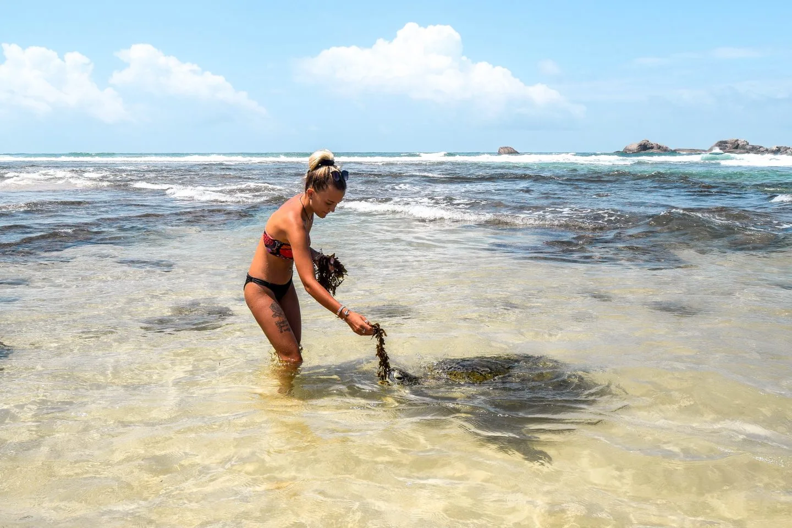

Things to do at Hikkaduwa hatchery
Experience the outstanding and remarkable activities to engage in during your visit to Hikkaduwa turtle hatcheries and make your visit to Sri Lanka absolutely memorable

Swimming with Turtles
Hikkaduwa has a lot of establishments prepared to offer you the equipment because snorkelling is one of the most well-liked hobbies to try out there. You'll have to make your way to this fringing reef's borders if you want to see the turtles. You'll encounter a variety of other fascinating reef inhabitants along the route, including the vibrant parrotfish and the enigmatic moray eel.

Release of Baby Turtles
Releasing of baby turtles can be observed if you visit a hatchery at 5.00am in the morning. This is a wonderful experience. To prevent birds from getting to the eggs, a netting has been used to secure them. The young turtles are kept in a tank after hatching until they are ready to be released into the ocean. For an extra cost, you can pay to have turtles returned to the water.

Visit rescue Turtles
Contemporary water tanks are included in the facilities at the sea turtle hatchery and rescue centre, which also cares for adult turtle species that have been pulled from the water after suffering injuries. The visitors are given the opportunity to encounter the peculliar sights of the rescue turtles and attend to them by feeding them and other activities